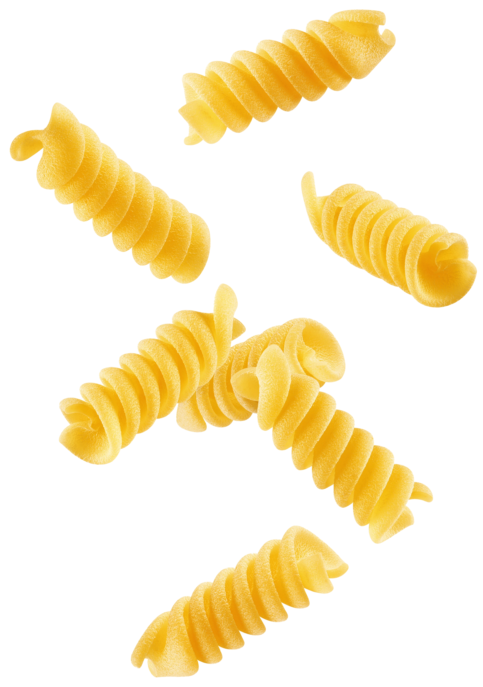
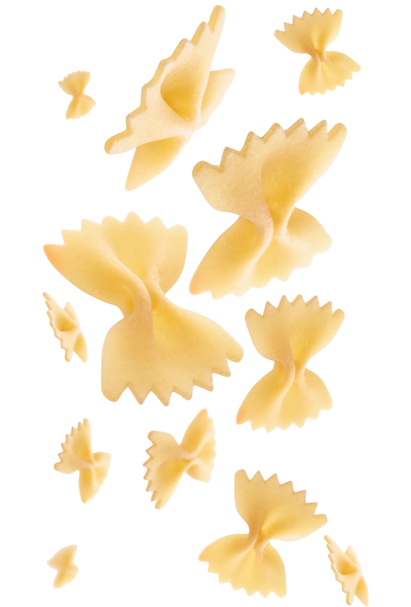
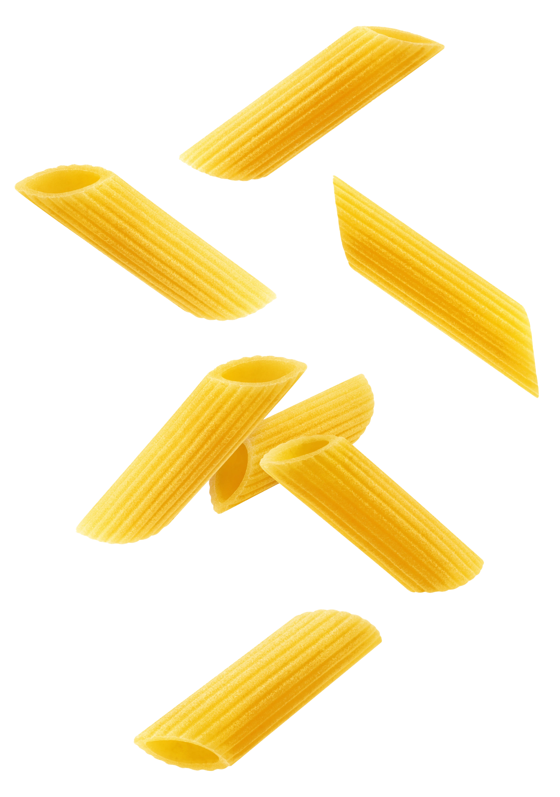

Sostenibilità & Domande Frequenti
L’importanza della sostenibilità per De Cecco
-
Qual è il segreto della pasta De Cecco?
Semola di grano duro, acqua, bassa temperatura, trafila in bronzo, essicazione lenta e un’estrema cura nella selezione delle materie prime sono il vero segreto della ricetta della pasta De Cecco. -
Quali sono i valori che guidano De Cecco nella produzione?
Responsabilità e cultura del fare: De Cecco ha adottato comportamenti eticamente, socialmente ed ecologicamente corretti ben prima di ottenere la certificazione di prodotto. L’azienda infatti ha sempre posto una massima attenzione nella scelta delle materie prime e nella produzione di un prodotto di alta qualità. -
Qual è il legame tra De Cecco e il territorio abruzzese?
Il forte indiscusso legame con l’Abruzzo non è mai venuto meno anche nei momenti di estrema difficoltà; per esempio, alla fine della seconda guerra mondiale, dopo aver subito la distruzione del complesso industriale, la famiglia De Cecco decise di ricostruire lo stabilimento di Fara San Martino. -
Come dimostra De Cecco il proprio rispetto per l’ambiente?
Il rispetto verso l’ambiente si manifesta nell’attenzione per l’impatto ambientale degli stabilimenti, collocati in posizione straordinaria ai piedi della Maiella; il complesso industriale odierno è di colore bianco, della farina, e azzurro come il cielo, e si inserisce senza traumi nel delicato paesaggio naturale circostante. -
In che modo De Cecco comunica con i consumatori?
Intratteniamo con il consumatore un rapporto chiaro, preciso: non lo possiamo deludere, non vogliamo deluderlo, e abbiamo anche l’obbligo di rassicurarlo nella sua scelta, facendogli sentire la forza e il prestigio del marchio cui lui accorda la sua fiducia. -
De Cecco ha sempre puntato sulla pubblicità?
Il nome di De Cecco non compariva sui cartelloni pubblicitari che tappezzavano i muri delle città, sui giornali e nei caroselli televisivi, eppure misteriosamente tutti lo conoscevano e la pasta De Cecco raggiungeva le cucine dei ristoranti più rinomati, i negozi di classe, le tavole dei raffinati. -
Come definisce De Cecco il concetto di qualità?
Non si tratta di una qualità generica, non meglio esplicabile al consumatore, bensì di una qualità basata su dati concreti, su parametri analitici che sono quotidianamente oggetto di costante misurazione e controllo. -
Perché De Cecco certifica i suoi parametri di qualità?
Perché senza la certezza non c’è neppure concretezza e senza concretezza non può esserci vera qualità.
